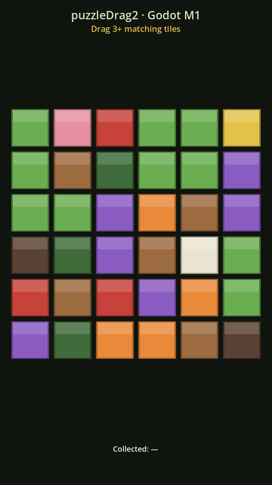
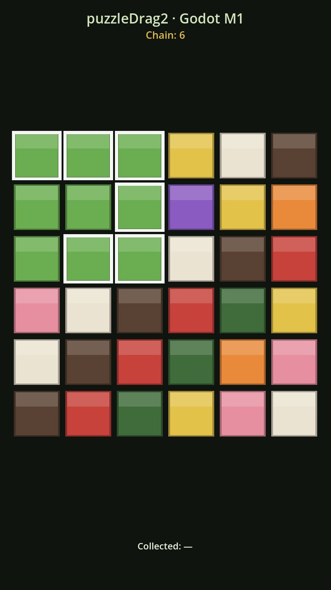
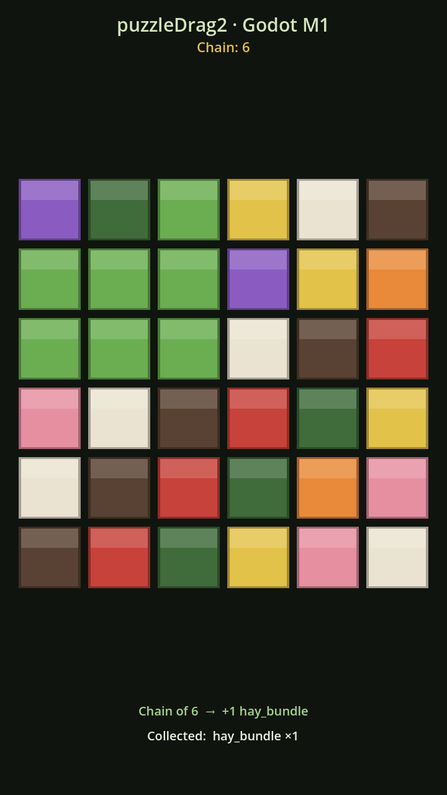
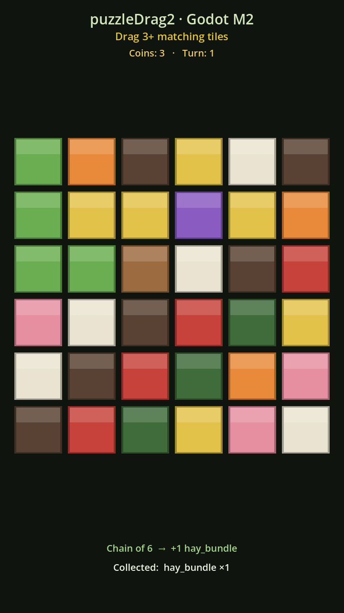
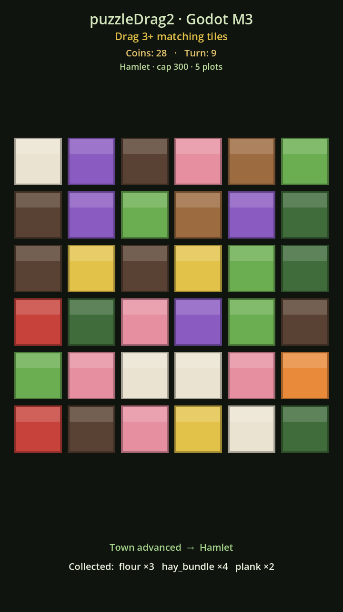
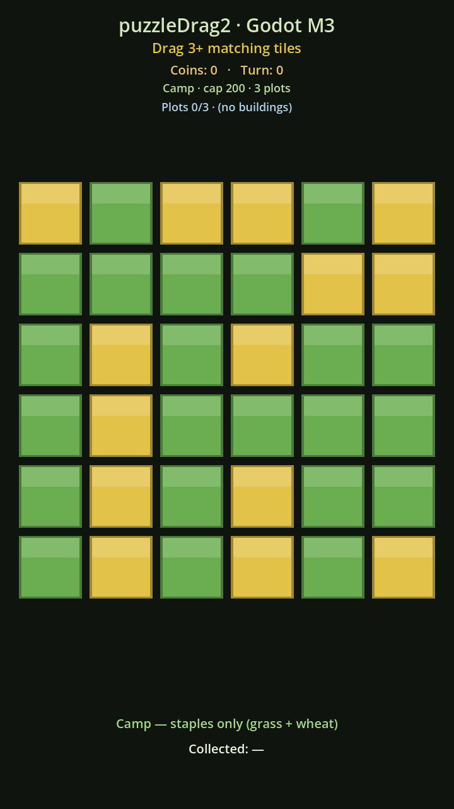
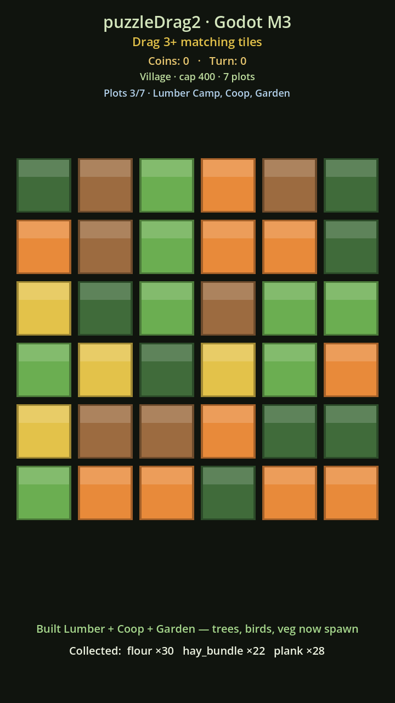
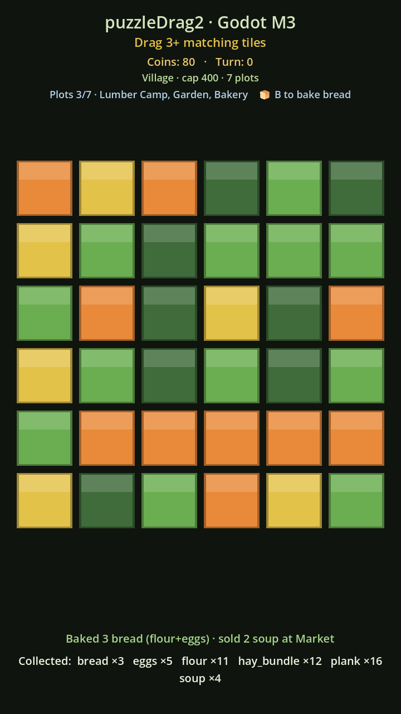
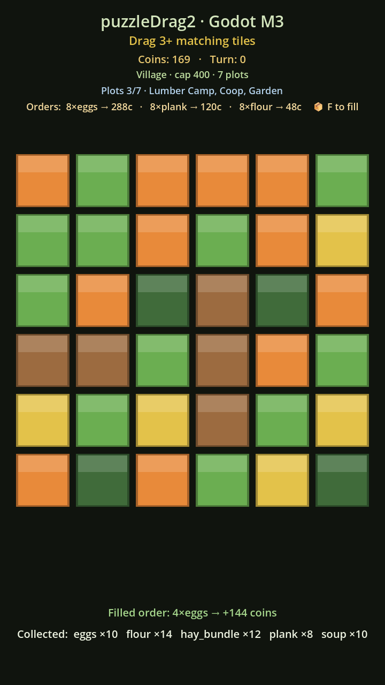
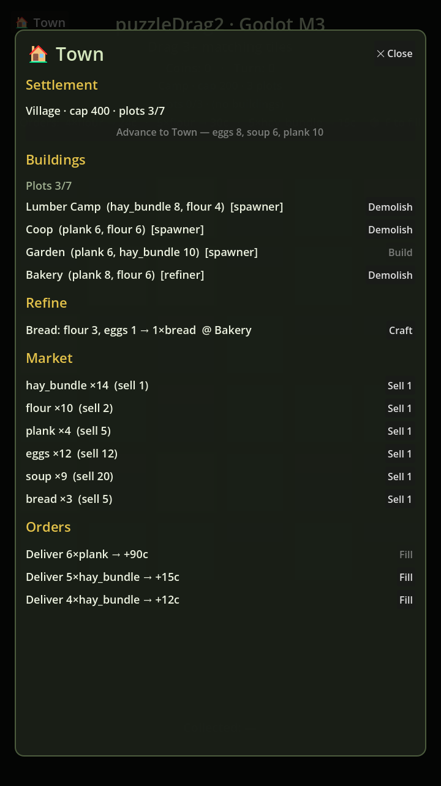

M3f · next
Expedition → Town 2 (mine)
The food gate (Kitchen→supplies), mine tiles + hazards; cross-collection (Decision #7) rides along here.
Living status for porting puzzleDrag2 from React + Phaser 3 to Godot 4. Companion to the strategy & roadmap; this page records what is actually built, verified, and decided.
godot/ ports the core puzzle mechanic (drag-chain → collapse → refill → resource credit) and the
run-economy layer on top of it: a GameState with the exact fractional resourceProgress
accumulator (remainder carries across chains), inventory + coins + turn, and versioned save/load that discards
mismatched saves. M3a landed the progression spine — the Camp→City tier ladder: a single
town-center upgrade that costs escalating local resources and raises a storage cap, plot count, and the next batch of
building unlocks. M3b added the central "the town you build reshapes the board" mechanic: every non-staple
tile category enters the refill pool only because a spawner building (Lumber Camp, Coop, Garden) put it
there, plots are scarce, and demolish frees a plot and drops its category. M3c now closes the loop with the
refining + market economy: a Bakery refiner bakes raw goods into bread (3 flour + 1 eggs → 1 bread)
via station-gated recipes, and a cap-aware Market sells goods for coins and buys them back. M3d adds the
Orders system — the Direction spec's coin sink: an NPC requests a quantity of a resource you can produce, and filling
the order pays 3× the raw Market price, so delivering goods beats selling them. M3e now ships the real
Town UI screen — a Control-based modal (built in code, like the HUD) with five live sections (Settlement,
Buildings, Refine, Market, Orders) whose buttons drive the whole Town-1 economy, replacing the temporary
T/1-6/B/G/F dev keys (which remain only as a keyboard fallback). It renders as a playable
board with placeholder art, a live economy + settlement + buildings + orders HUD, and a "🏠 Town" button that opens the panel.
Headless tests and a Web-export job are wired
into CI. The Phaser version at the repo root is untouched and still fully playable.Constants.gdGameState (inventory + progress + coins + turn), versioned save/load, economy HUD, 42-check state suiteWith the foundational board (M1, merged as PR #930), the run-economy layer (M2, done on
claude/godot-migration-m2), the Camp→City tier ladder (M3a, done on
claude/godot-migration-m3a-tiers), the buildings/plots/spawners layer (M3b, done on
claude/godot-migration-m3b-buildings), the refining + market economy (M3c, done on
claude/godot-migration-m3c-economy), and the orders system (M3d, done on
claude/godot-migration-m3d-orders) all landed and verified on Godot 4.6.2, M3 — the Town 1→2→3
Direction slice — continues as a sequence of sub-PRs (re-scoped from 6→7 when Orders and the Town UI were split for
reviewability). M3e (the Town UI screen) just landed on
claude/godot-migration-m3e-town-ui: a Control-based Town modal with five live sections whose buttons drive
the whole Town-1 economy, replacing the temporary T/1-6/B/G/F dev keys (kept only as a keyboard fallback). Next up is
M3f — the expedition → Town 2 (the mine).
Constants.gd + BoardLogic.gd + Tile/Board/Main scenes: a drag-chain → collapse → refill 6×6 board with HUD, tests, and CI. Merged via PR #930.
New GameState.gd ports the fractional resourceProgress accumulator exactly (remainder carries across chains); SaveManager.gd adds versioned save/load with a discard-don't-migrate policy; the HUD now shows coins, turn, and a collected tally.
TownConfig.gd holds the five-tier farm ladder (Camp 200/3 → City 600/11) as data; Settlement.gd is the mutable tier cursor; GameState gains can_tier_up/try_tier_up (exact-cost deduction) and clamps every credit to settlement.cap(). A 69-check town suite covers it; a temporary T-key affordance drives the ladder until the M3e Town UI ships.
BuildingConfig.gd holds the Town-1 spawner catalog (Lumber Camp → trees, Coop → birds, Garden → veg); GameState gains a buildings list with can_build/build/demolish and an active_tile_pool() that Board draws from, so building a spawner makes its category start appearing as the board refills. The tier-up costs were revised to be gating-aware (deadlock-free). A 91-check building suite covers it; temporary 1/2/3/4/5/6 build/demolish keys drive it until the M3e Town UI ships.
RecipeConfig.gd holds the station-gated recipe catalog (bread = 3 flour + 1 eggs at the Bakery); MarketConfig.gd holds the SELL/BUY price tables; BuildingConfig.gd gains a building kind and the Bakery refiner; GameState gains can_craft/craft, sell, and a cap-aware buy, with refiners guarded out of the board pool. A 136-check economy suite covers it; temporary B (bake) and G (sell) keys drive it until the Market/Bakery UI ships.
OrderConfig.gd holds the order tuning (MAX_ORDERS=3, qty 3–8, REWARD_MULT=3); GameState gains an orders list, a seeded rng, orderable_resources(), and generate_order/refill_orders/can_fill_order/fill_order (deduct the qty, credit the uncapped reward = sell_price × qty × 3, then refill). Orders persist and are sanitised on load. A 121-check orders suite covers it; the M3e Town UI now ships the real order Fill buttons, with the F key kept as a fallback.
TownScreen.gd (class_name TownScreen extends CanvasLayer) is a dim-backdrop Control modal with five live sections — Settlement (tier line + "Advance" button), Buildings (Build/Demolish rows), Refine (Craft buttons), Market (Sell buttons), Orders (Fill buttons) — each reading current GameState, calling the matching method, and re-rendering so disabled states stay accurate. Main.gd opens it from an always-visible "🏠 Town" button; the temporary T/1-6/B/G/F keys remain only as a keyboard fallback. A 35-check town-UI suite presses the buttons headless and asserts GameState mutated.
The food gate (Kitchen→supplies) and the mine: mine tiles + hazards, and the expedition that opens Town 2. Then M3g capstone boss + Town 3. Cross-collection (Decision #7) rides along with M3f.
Mapped one-to-one to the plan's M1 list. Done when a human can drag a chain, it resolves, the board collapses, and it feels right on desktop and mobile browser.
.gitignore, export presets
godot/project.godot, .gitignore, export_presets.cfg — Web preset validated structurally (only the export-template download is missing locally).scenes/Tile.gd draws a colored rounded square per Constants.Tile; Board lays out the centered grid. See screenshots in Verification.emulate_mouse_from_touch in project settings; Board._unhandled_input handles press/drag/release with backtrack support.BoardLogic.is_valid_chain — 8-way (king) adjacency, same key, no revisit. Rules confirmed against src/GameScene.ts:1434–1436. Unit-tested.BoardLogic.collapse / refill (unit-tested); Board animates the fall-in. Dead boards auto-reshuffle.scenes/Main.gd — live "Chain: N", a last-result line, and a running resource tally.tests/run_tests.gd). The GdUnit4 addon is not yet vendored — see Decision #2. The same BoardLogic is what GdUnit4 will wrap..github/workflows/godot-ci.yml — green on its first cloud run (PR #930): headless tests 15s, Web export 1m1s. setup-godot resolves 4.6.2 and the headless run matches local.index.html + index.wasm, uploaded as an artifact). The Playwright-on-export browser smoke is the remaining piece.upgrade_count(chain_len, threshold) + per-tile THRESHOLDS, unit-tested (the fractional accumulator itself landed in M2 — see the M2 detail tab).BoardLogic.has_valid_chain (8-connected component ≥ 3).tools/screenshot.gd / tools/demo_capture.gd render the scene to PNGs for evidence.| File | Role |
|---|---|
godot/project.godot | Project config — GL Compatibility renderer, 720×1280 portrait, touch↔mouse emulation |
godot/export_presets.cfg | Web export preset (nothreads variant — runs on GitHub Pages without COOP/COEP) |
godot/scripts/Constants.gd | class_name global: board dims, Farm tile enum + string keys, produced resources, thresholds, placeholder colors |
godot/scripts/BoardLogic.gd | Pure rules: is_valid_chain, collapse, refill, upgrade_count, has_valid_chain |
godot/scenes/Tile.gd | One placeholder tile (procedural _draw, highlight ring) |
godot/scenes/Board.gd | 6×6 grid: render, drag input, collect → collapse → refill with tweens |
godot/scenes/Main.gd / Main.tscn | Root scene: owns the Board + the CanvasLayer HUD |
godot/tests/run_tests.gd | Headless BoardLogic unit tests (18 checks) |
godot/tests/run_scene_smoke.gd | Headless Main+Board wiring smoke (9 checks) |
.github/workflows/godot-ci.yml | CI: headless tests + Web export on godot/** changes |
The game-economy layer that sits on top of M1's board. Done when a resolved chain credits a real inventory
through the carry-over accumulator, coins and turn advance, and the run survives a reload. All items below are built
and verified on Godot 4.6.2 (branch claude/godot-migration-m2).
resourceProgress port
GameState.credit_chain(tile_type, chain_len): new_progress = progress[res] + n → units = new_progress / threshold (integer floor) → progress[res] = new_progress % threshold. The remainder carries across chains — a 4-grass chain at threshold 6 yields 0 units but leaves progress 4; a later 4-grass chain makes progress 8 → 1 unit, progress 2. Mirrors src/state.ts at the CHAIN_COLLECTED site.GameState (class_name … extends RefCounted): inventory (resource→count), progress (resource→carry remainder), coins, turn, plus qty() and to_dict()/from_dict().SaveManager.gd (all static): JSON at user://save.json. load_state() discards saves that are missing, unparseable, or version-mismatched and starts fresh — the same policy as the React SAVE_SCHEMA_VERSION. save() / clear() complete the API.chain_resolved(tile_type, length)
Board.gd no longer computes units per-chain (which couldn't carry over) — it just reports the resolved family + length and leaves all economy to GameState.Main.gd owns a GameState loaded via SaveManager.load_state() on _ready, credits every resolve, persists after each, and shows the title "puzzleDrag2 · Godot M2", a "Coins: N · Turn: N" line, and a "Collected: …" tally. A restored save shows its coins/turn/inventory on load.tests/run_state_tests.gd: below-threshold accumulation, cross-chain carry-over, exact-threshold, multi-unit chains, per-resource bucket independence, coins/turn increments, NO_THRESHOLD safety, to_dict/from_dict round-trip, and a SaveManager save→load→clear round-trip.godot-ci.yml runs the new suite as its own step after the existing --import pass (import is required so the new class_name globals register before the --script runners execute). run_scene_smoke.gd updated to the 2-arg signal.value-based coin economy — M2 uses a placeholder max(1, chain_len/2) per resolve (Decision #10).| File | Role |
|---|---|
godot/scripts/GameState.gd | class_name GameState extends RefCounted — run economy owner: inventory, carry-over progress, coins, turn; credit_chain, qty, to_dict/from_dict |
godot/scripts/SaveManager.gd | Static versioned JSON persistence at user://save.json — load_state (discard-don't-migrate), save, clear |
godot/scenes/Board.gd | Signal narrowed to chain_resolved(tile_type, length) — board no longer knows about resources/economy |
godot/scenes/Main.gd | Owns the GameState (loaded on _ready), credits + persists each resolve, renders the economy HUD (coins / turn / collected) |
godot/tests/run_state_tests.gd | Headless GameState + SaveManager tests (42 checks) |
godot/tests/run_scene_smoke.gd | Updated to the 2-arg chain_resolved signal |
.github/workflows/godot-ci.yml | Adds the state-suite step after the required --import pass that registers the new class_name globals |
The content & progression milestone — the locked Direction spec's Town 1 → Town 2 (+capstone boss)
→ Town 3 vertical slice. It ships as a sequence of sub-PRs (M3a…M3g). M3a — the Camp→City tier ladder
(branch claude/godot-migration-m3a-tiers), M3b — buildings + plots + spawners + demolish (branch
claude/godot-migration-m3b-buildings), M3c — refining + market economy (branch
claude/godot-migration-m3c-economy), M3d — the orders system (branch
claude/godot-migration-m3d-orders), and M3e — the Town UI screen (branch
claude/godot-migration-m3e-town-ui) are all done and merge-ready; the rest are sequenced below.
TownConfig.gd (class_name TownConfig extends Node): five tiers — Camp (cap 200, 3 plots) · Hamlet (300, 5) · Village (400, 7) · Town (500, 9) · City (600, 11) — with per-tier storage cap, plot count, building unlocks (description-only for now), and next-tier costs. Static helpers expose cap/plots/unlocks/next-cost by tier.Settlement.gd (class_name Settlement extends RefCounted): a mutable tier cursor delegating cap/plots/unlocks/next-cost to TownConfig; to_dict/from_dict clamps a corrupt tier into [1,5].GameState
GameState now owns a Settlement. can_tier_up() is true only when not maxed and inventory covers the next cost; try_tier_up() deducts the exact cost (leaves surplus and non-cost goods, never mutates on failure) and returns {ok, tier, name} or {ok:false, reason}. The settlement round-trips through SaveManager.credit_chain now clamps every resource to settlement.cap() (Camp 200 … City 600). Central and simple — see Decision #12.Main.gd shows "Camp · cap 200 · 3 plots" plus a "▲ Press T to advance to <next>" prompt when affordable. The T-key is a temporary affordance (Decision #13) until the M3e Town UI ships the real button. Title bumped to "puzzleDrag2 · Godot M3".tests/run_town_tests.gd: ladder table values for all 5 tiers, affordability gating, exact-cost deduction, surplus/non-cost goods preserved, partial-funds failure leaves inventory untouched, max-tier behaviour, the cap clamp, and a tier-3 save/load round-trip. CI runs it as its own step.BuildingConfig.gd (class_name BuildingConfig extends Node, stateless): the three Town-1 spawners — Lumber Camp (unlock Hamlet, cost {hay_bundle:8, flour:4}, adds the trees category → oak/plank) · Coop (unlock Village, cost {plank:6, flour:6}, adds birds → pheasant/eggs) · Garden (unlock Village, cost {plank:6, hay_bundle:10}, adds veg → carrot/soup). Static helpers expose unlock tier, cost, and the category each one spawns.Constants.gd
Beyond a town's two staple tiles (grass→hay_bundle, wheat/grain→flour), every other category appears only via a spawner. Constants.gd gains STAPLE_TILES, a weighted STAPLE_POOL (grass ×3, wheat ×2), the Tile→category map, and category_of().GameState; build/demolish gating + the dynamic pool
GameState gains a buildings list; can_build/build (guard order unknown→exists→locked→no_plot→insufficient, never mutates on failure) and demolish (frees the plot, no resource refund — Decision #17); plots_used/plots_free; and active_categories() + active_tile_pool() (staples + each placed spawner's tile twice). Buildings persist through SaveManager and are sanitised on load (unknown ids dropped).Board.gd gains a dynamic tile_pool (+set_tile_pool); setup, reshuffle, and refill all draw from it, so a newly built category starts appearing as the board refills — the Direction's "the town you build reshapes the board you play" (Decision #15).TownConfig.gd ladder costs rewritten so every cost references only resources producible at or below the tier it gates (→Hamlet {hay_bundle:12, flour:6}, →Village {plank:8, hay_bundle:16, flour:8}, →Town {eggs:8, soup:6, plank:10}, →City {soup:10, eggs:12, plank:14}). The M3a first-pass costs would deadlock once the pool is gated (plank needs Lumber Camp, which only unlocks AT Hamlet). See Decision #16.Main.gd shows a buildings line ("Plots 3/7 · Lumber Camp, Coop, Garden"); temporary keys 1/2/3 build and 4/5/6 demolish (Decision #18) drive it until the M3e Town build menu ships; the board is re-pooled and the game saved on every change.tests/run_building_tests.gd: catalog values, tier/plot/cost gating, exact-cost build, the plot cap, demolish/free + no-refund, pool/category derivation, save-load filtering of bogus ids, and a full Camp→City no-deadlock progression walk (builds each spawner and tiers up at each step). run_town_tests.gd updated to the revised costs. M3c updated it for the Bakery refiner (now 91 checks). CI runs it as its own step.RecipeConfig.gd (class_name RecipeConfig extends Node, stateless): the recipe catalog, shipping one — bread = 3 flour + 1 eggs → 1 bread at the Bakery station (ports the React rec_bread). Copy-returning helpers expose inputs/output/qty/station, is_recipe, and recipes_for_station.MarketConfig.gd (class_name MarketConfig extends Node): first-pass SELL/BUY price tables from the Balance baseline (e.g. hay_bundle 1/40, flour 2/30, plank 5/40, eggs 12/80, soup 20/220, bread 5/60 — tunable), with sell_price/buy_price, can_sell/can_buy, and sellable_resources/buyable_resources.kind (spawner vs refiner) + the Bakery refiner
BuildingConfig.gd buildings now carry a kind ("spawner" | "refiner"); the three category buildings are spawners, and a new Bakery refiner (unlock Village, cost {plank:8, flour:6}, adds no tile/category) is added. ALL_BUILD_IDS, is_spawner/is_refiner; available_at_tier now also offers refiners.GameState
can_craft/craft (station-gated, deducts inputs, output cap-clamped; guard order unknown→no_station→insufficient), sell (coins += sell_price × qty; bad_qty→not_sellable→insufficient), and a cap-aware buy (only buys and charges for what fits in storage — cant_afford vs cap_full). active_tile_pool/active_categories now guard refiners so a Bakery never adds a blank tile/category to the board pool.Main.gd gains temporary keys B (bake bread) and G (sell 1 hay_bundle) plus a Bakery hint in the HUD; the real Market/Bakery UI is M3d.tests/run_economy_tests.gd: recipe catalog, craft gating + exact deduction, the refiner-not-in-pool guard, market sell/buy math, cap-clipped buy, a refined-good save/load round-trip, and a bake-then-sell integration. run_building_tests.gd updated for the Bakery (now 91 checks). CI runs the new economy suite as its own step.OrderConfig.gd (class_name OrderConfig extends Node, stateless): generation tuning — MAX_ORDERS=3, qty range 3–8, REWARD_MULT=3 — and reward_for(resource, qty) = sell_price × qty × 3 (floored at 1). PC2-aligned first-pass and tunable, same spirit as the tier-cost / market first passes (Decisions #14, #20).GameState with a seeded RNG
GameState gains an orders Array of {resource, qty, reward} and a seeded rng (seed_orders for reproducible tests). orderable_resources() returns the two staples plus each placed building's resource, so a generated order is always fillable in principle.generate_order, refill_orders (tops up to MAX_ORDERS, idempotent), can_fill_order, and fill_order — deducts the qty, credits the uncapped reward, removes the order, and refills; never mutates on failure (reasons bad_index / insufficient). Filling an order beats selling the same goods at the Market — see Decision #22.SaveManager (deep-copied); malformed entries are dropped on load, with no auto-refill on a loaded save.Main.gd shows an orders HUD line and refills on load (rng seeded 1337 for deterministic running-game orders); temporary key F fills the first fillable order (Decision #13 spirit). The M3e Town UI now ships the real order Fill buttons; the F key remains a fallback.tests/run_orders_tests.gd: reward math, orderable-resource derivation, generate-order invariants (run ~20×), refill idempotence, fill deduct/pay/refill, insufficient / bad-index no-ops, the market-beating 3× reward, save/load + malformed-entry filtering, and that coins are uncapped. CI runs it as its own step.CanvasLayer modal
TownScreen.gd (class_name TownScreen extends CanvasLayer): a dim-backdrop modal over a scrollable PanelContainer with five live sections, each reading current GameState — Settlement (tier line "Village · cap 400 · plots 3/7" + an "Advance to {next} — {cost}" button disabled unless can_tier_up()), Buildings (a Build button disabled unless can_build, or a Demolish button if placed; rows show name/cost/kind), Refine (a Craft button per recipe, disabled unless can_craft), Market (a "Sell 1" button per owned sellable resource), and Orders (a Fill button per order, disabled unless can_fill_order). It exposes an _action_buttons (string→Button) map so headless tests can press any specific button. The temporary T/1-6/B/G/F dev keys are now a keyboard fallback (Decisions #13, #18) — the panel is the real path.GameState method and re-renders
A button calls the matching method (tier-up / build / demolish / craft / sell / fill), emits state_changed only on success, and re-renders so disabled states re-evaluate. refresh() detaches old rows immediately (remove_child) but defers the node free (queue_free) so a button can't be freed mid-signal-emit while the _action_buttons dict stays consistent within the same call stack (Decision #25).Main.gd opens the panel from an always-visible "🏠 Town" button
Main.gd lazily creates the panel and opens it from a "🏠 Town" HUD button; on state_changed it re-pools the board (set_tile_pool), refreshes every HUD label, and saves. The temporary keys remain only as a keyboard fallback.tests/run_town_ui_tests.gd: instantiate the panel, emit_signal("pressed") on the build/demolish/tier-up/craft/sell/fill/close buttons, assert GameState mutated and state_changed/closed fired, and that a built building flips its row from Build→Demolish. CI runs it as its own step.| File | Role |
|---|---|
godot/scripts/TownConfig.gd | class_name TownConfig extends Node — the Town-1 farm ladder as data + static helpers (5 tiers: Camp 200/3 → City 600/11, with caps, plots, unlocks, escalating cross-category tier-up costs). M3b revised the costs to be gating-aware (deadlock-free). |
godot/scripts/Settlement.gd | class_name Settlement extends RefCounted — mutable per-town tier cursor; delegates cap/plots/unlocks/next-cost to TownConfig; to_dict/from_dict clamps tier into [1,5] |
godot/scripts/GameState.gd | Owns a Settlement; adds can_tier_up / try_tier_up (exact-cost deduction, no mutation on failure); credit_chain clamps every resource to settlement.cap(). M3b also added the buildings list + build/demolish + pool helpers (see below). |
godot/scenes/Main.gd | HUD settlement line ("Camp · cap 200 · 3 plots") + temporary T-key tier-up affordance; title bumped to "puzzleDrag2 · Godot M3". M3b added the buildings HUD line + 1/2/3/4/5/6 keys + board re-pooling. |
godot/tests/run_town_tests.gd | Headless TownConfig + Settlement + tier-up tests (69 checks): ladder table, affordability gating, exact deduction, surplus/non-cost preservation, partial-funds no-op, max-tier, cap clamp, tier-3 save/load round-trip. M3b updated it to the revised ladder costs. |
.github/workflows/godot-ci.yml | Adds the town-suite step (runs after the --import pass that registers the new class_name globals). M3b adds the building-suite step. |
| File | Role |
|---|---|
godot/scripts/BuildingConfig.gd | New. class_name BuildingConfig extends Node (stateless) — the Town-1 spawner catalog (Lumber Camp → trees, Coop → birds, Garden → veg) with per-building unlock tier, cost, and spawned category; static lookup helpers |
godot/scripts/Constants.gd | Adds STAPLE_TILES, the weighted STAPLE_POOL (grass ×3, wheat ×2), the Tile→category map, and category_of() |
godot/scripts/GameState.gd | Adds the buildings list, can_build/build/demolish (build guard order; demolish frees the plot with no refund), plots_used/plots_free, and active_categories()/active_tile_pool(); buildings persisted + sanitised on load (unknown ids dropped) |
godot/scenes/Board.gd | Dynamic tile_pool (+set_tile_pool); setup/reshuffle/refill all draw from it, so newly built categories appear as the board refills |
godot/scenes/Main.gd | Buildings HUD line ("Plots 3/7 · Lumber Camp, Coop, Garden"); temporary 1/2/3 build + 4/5/6 demolish keys; re-pools the board + saves on every change |
godot/tests/run_building_tests.gd | New. Headless BuildingConfig + build/demolish + pool tests (90 checks): catalog values, tier/plot/cost gating, exact-cost build, plot cap, demolish/free + no-refund, pool/category derivation, save-load id filtering, and a full Camp→City no-deadlock progression walk. M3c updated it for the Bakery refiner (now 91 checks). |
| File | Role |
|---|---|
godot/scripts/RecipeConfig.gd | New. class_name RecipeConfig extends Node (stateless) — the station-gated recipe catalog (ships bread = 3 flour + 1 eggs → 1 bread at the Bakery, ported from the React rec_bread); copy-returning recipe_inputs/output/qty/station, is_recipe, recipes_for_station |
godot/scripts/MarketConfig.gd | New. class_name MarketConfig extends Node — PC2-aligned first-pass SELL/BUY price tables from the Balance baseline (tunable) + sell_price/buy_price, can_sell/can_buy, sellable_resources/buyable_resources |
godot/scripts/BuildingConfig.gd | Buildings gain a kind ("spawner" | "refiner"); adds the Bakery refiner (unlock Village, cost {plank:8, flour:6}, adds no tile/category); ALL_BUILD_IDS, is_spawner/is_refiner; available_at_tier now also offers refiners |
godot/scripts/GameState.gd | Adds can_craft/craft (station-gated, deducts inputs, output cap-clamped), sell (coins += sell_price × qty), and a cap-aware buy (cant_afford vs cap_full); active_tile_pool/active_categories guard refiners so a Bakery adds nothing to the board pool |
godot/scenes/Main.gd | Temporary B (bake bread) + G (sell 1 hay_bundle) demo keys and a Bakery hint in the HUD; the real Market/Bakery UI is M3d |
godot/tests/run_economy_tests.gd | New. Headless RecipeConfig + MarketConfig + craft/sell/buy tests (136 checks): recipe catalog, craft gating + exact deduction, refiner-not-in-pool guard, market sell/buy math, cap-clipped buy, refined-good save/load round-trip, and a bake-then-sell integration |
.github/workflows/godot-ci.yml | Adds the economy-suite step (runs after the --import pass that registers the new class_name globals) |
| File | Role |
|---|---|
godot/scripts/OrderConfig.gd | New. class_name OrderConfig extends Node (stateless) — order generation tuning (MAX_ORDERS=3, qty 3–8, REWARD_MULT=3) + reward_for(resource, qty) = sell_price × qty × 3 (floored at 1). PC2-aligned first-pass, tunable |
godot/scripts/GameState.gd | Adds the orders list + a seeded rng (seed_orders), orderable_resources(), and generate_order/refill_orders (idempotent)/can_fill_order/fill_order (deduct qty, credit the uncapped reward, remove + refill; never mutates on failure); orders persisted (deep-copied) + sanitised on load |
godot/scenes/Main.gd | Orders HUD line + a refill on load (rng seeded 1337 for deterministic running-game orders); temporary key F fills the first fillable order — the M3e Town UI now ships the real order Fill buttons, with the F key kept as a fallback |
godot/tests/run_orders_tests.gd | New. Headless OrderConfig + orders tests (121 checks): reward math, orderable-resource derivation, generate-order invariants (~20×), refill idempotence, fill deduct/pay/refill, insufficient / bad-index no-ops, the market-beating 3× reward, save/load + malformed-entry filtering, uncapped coins |
.github/workflows/godot-ci.yml | Adds the orders-suite step (runs after the --import pass that registers the new class_name globals) |
| File | Role |
|---|---|
godot/scenes/TownScreen.gd | New. class_name TownScreen extends CanvasLayer — the dim-backdrop Town modal (built in code, like the HUD) over a scrollable PanelContainer with five live sections (Settlement / Buildings / Refine / Market / Orders); each button calls the matching GameState method, emits state_changed on success, and re-renders so disabled states re-evaluate. refresh() detaches rows immediately but defers queue_free (safe under signal emit); exposes an _action_buttons map for headless tests |
godot/scenes/Main.gd | Adds an always-visible "🏠 Town" HUD button that lazily creates + opens the TownScreen; on state_changed re-pools the board (set_tile_pool), refreshes the HUD, and saves. The temporary T/1-6/B/G/F keys remain only as a keyboard fallback |
godot/tests/run_town_ui_tests.gd | New. Headless TownScreen tests (35 checks): instantiate the panel, emit_signal("pressed") on the build/demolish/tier-up/craft/sell/fill/close buttons, assert GameState mutated and state_changed/closed fired, and that a built building's row flips Build→Demolish |
.github/workflows/godot-ci.yml | Adds the town-UI-suite step (runs after the --import pass that registers the new class_name globals) |
Each is a deliberate call made while building M1. Where it deviates from the strategy doc, the rationale is noted so a future reader (or a reviewer) can challenge it.
Constants is a class_name global, not an autoloadThe plan calls for a Constants autoload. Autoloads aren't guaranteed to be instantiated when a script is
run via --script (headless tests), so a pure class_name with const/enum/static func
members is reachable at compile time from tests with no live tree. This satisfies the plan's intent (one shared constants
module) while keeping tests dependency-free. An autoload instance can still be added later if a singleton with mutable
state is needed.
The plan specifies GdUnit4. Vendoring that addon needs a network fetch that could block "tests from day one," so M1 ships
a tiny dependency-free runner (extends SceneTree, asserts, quit(0/1)) that CI gates on. It exercises the exact
same BoardLogic class GdUnit4 will wrap, so adopting GdUnit4 is additive, not a rewrite. Tracked as a partial M1 item.
nothreads variantvariant/thread_support=false. Threaded WebAssembly requires the host to send COOP/COEP cross-origin-isolation
headers; GitHub Pages does not. Single-threaded keeps the export runnable on Pages (where the dev tools already deploy).
Adjacency is 8-way (king moves), matching is by exact tile key, the path may not revisit a cell, and dragging back
onto the previous cell backtracks. All confirmed against src/GameScene.ts:1434–1436 before porting.
grid is re-synced from itBoard mutates its tile nodes during collapse/refill, then derives the integer grid from them
(_sync_grid_from_tiles). This avoids keeping two sources of truth in lock-step and guarantees drag validation always
sees exactly what's on screen.
Collected tiles pop, survivors slide down, new tiles fall in — enough to "feel right". Full collect/collapse VFX (particles, golden upgrade burst, staggered timing) is explicitly M4 and is not attempted here.
The Phaser game also collects tiles of a different family that are 4-way adjacent to the chain
(src/GameScene.ts:1769–1772). M1 ports the single-family chain only. Cross-collection is a resource-systems detail
and now rides along with the M3 content/biome work. Recorded here as an explicit debt.
GameState, not the boardIn M1 the board computed units per-chain, but a per-chain calculation cannot carry a remainder across chains. M2
moves the whole resource credit into GameState.credit_chain and narrows the board signal to
chain_resolved(tile_type, length) — the board reports the family + length and knows nothing about resources or
economy. credit_chain ports the React resourceProgress accumulator from src/state.ts
(the CHAIN_COLLECTED site) exactly: units = (progress[res] + n) / threshold, with
progress[res] = (progress[res] + n) % threshold persisting the remainder between chains. This keeps a single
owner of run state and makes the carry-over behaviour unit-testable in isolation.
SaveManager.load_state() discards a save that is missing, unparseable, or version-mismatched and starts a
fresh run, rather than maintaining forward migrations. This is the deliberate policy the React app uses with
SAVE_SCHEMA_VERSION (the reducer discards saves whose version doesn't match). Bumping the version is the
sanctioned way to invalidate old saves; there is intentionally no migration ladder to maintain.
turn insteadThe strategy doc's M2 list mentions a "10 turns × 4 seasons" cycle. But the live React app removed the season calendar
from gameplay in Phase 7 — SEASONS is now visual-only and no longer drives harvest bonuses, order
multipliers, or a winter min-chain floor. So M2 implements a plain monotonic turn counter and ports no
season mechanics. This is faithful to the current code, not the stale plan.
Each resolved chain earns max(1, chain_len / 2) coins. The React per-tile value-based coin
economy (and the XP/almanac, bubbles, and hazards that go with it) is deferred to M3. M2's coin counter exists to prove
the HUD and persistence wiring end-to-end; the real numbers land with the content/progression milestone.
credit_chain, not a separate passThe Direction "cap" (200→600 by tier) is applied at the credit site: credit_chain clamps each resource to
settlement.cap() as it writes it. This keeps cap enforcement simple and central — there is one place that
mutates inventory and it is also the place that respects the ceiling, so no resource can slip past the cap through a
side path. Revisit if per-resource or soft (overflow-with-decay) caps are needed later; for the first-pass single
global cap this is the least machinery.
The real tier-up button belongs to the Godot town screen, which is a later sub-PR (M3d). Rather than block the
ladder on that UI, M3a drives the town-center upgrade with a keyboard T key so the whole Camp→City progression is
exercisable and demoable today (and the 69-check suite can assert it). It is flagged temporary both in
Main.gd and here, and is removed when M3d ships the button.
The escalating, cross-category tier-up costs in TownConfig.gd are a first-pass aligned to the PC2 balance
baseline and expressed only in resources the port already produces, so the ladder is playable today. They live as data
in TownConfig and are tunable — same spirit as the M2 coins simplification (Decision #11); final balance
rides with the broader M3 content work. Updated in M3b: once the board pool became building-gated, the M3a
first-pass costs would deadlock (they required plank to reach Hamlet, but plank needs the
Lumber Camp, which only unlocks at Hamlet), so the ladder was rewritten to be gating-aware — see
Decision #16 for the new values.
Beyond a town's two staple tiles (grass→hay_bundle, wheat/grain→flour, weighted in STAPLE_POOL),
every other tile category enters the spawn pool only because a spawner building put it there.
GameState.active_tile_pool() = staples + each placed spawner's tile (twice), and it is swapped into the
board via Board.set_tile_pool; setup, reshuffle, and refill all draw from that dynamic pool, so building a
spawner makes its category start appearing as the board refills. This is the Direction's "the town you build reshapes
the board you play" — the central M3 mechanic, expressed with the least machinery.
Once the pool is gated (Decision #15), M3a's costs would deadlock — the →Hamlet cost required plank,
but plank only exists once the Lumber Camp is built, and the Lumber Camp only unlocks at Hamlet. So
the Town-1 ladder costs were rewritten so every cost references only resources producible at or below the tier it gates:
→Hamlet {hay_bundle:12, flour:6}, →Village {plank:8, hay_bundle:16, flour:8}, →Town
{eggs:8, soup:6, plank:10}, →City {soup:10, eggs:12, plank:14}. The
run_building_tests.gd no-deadlock progression walk proves the whole Camp→City climb is reachable by
building each spawner and tiering up at each step.
The Direction lists the refund policy — and whether a progression-required building should be non-demolishable — as
open questions. M3b takes the simplest stance: demolish frees the building's plot and drops its category
from the pool, but returns no resources. It is flagged temporary; the refund/lock policy is decided when the
M3e Town UI makes demolish a deliberate player action rather than a dev key.
The real build/demolish menu belongs to the Godot town screen (M3d). Rather than block the buildings mechanic on that UI, M3b drives it with keyboard keys — 1/2/3 build the three Town-1 spawners, 4/5/6 demolish them — so the whole build → re-pool → category-spawns loop is exercisable and demoable today (and the 90-check suite can assert it). Same spirit as the temporary T-key tier-up affordance (Decision #13); the keys are removed when M3d ships the menu.
The Direction's "raw goods refine at buildings" loop is modelled as recipes that name a station building.
GameState.craft requires that station to be placed, deducts the recipe's exact inputs, and adds the
(cap-clamped) output — guard order unknown → no_station → insufficient, never mutating on failure. The
first recipe is bread (3 flour + 1 eggs → 1 bread) at the Bakery, ported from the React
RECIPES (rec_bread). The catalog lives as data in RecipeConfig.gd and is the
single place a station-gated transform is defined, so adding the Mill (grain→flour) or any later refiner is a data
row, not new control flow.
sell_price × qtySelling is straightforward — sell credits coins += sell_price × qty (guard order
bad_qty → not_sellable → insufficient). Buying is the subtle one: it respects the settlement storage cap,
so buy only purchases and charges for the units that actually fit — cant_afford when you can't
pay the full ask, cap_full when storage is already maxed, and a partial fill when only some units fit. This
keeps the cap (Decision #12) authoritative on the spend side too: coins can never conjure inventory past the
ceiling. The SELL/BUY tables are PC2-aligned first-pass values in MarketConfig.gd (tunable), same spirit as
the tier-cost first pass (Decision #14).
kind — spawners seed the board, refiners do notAdding the Bakery surfaced a split in what a building does: the three category buildings are spawners
(they put a tile category into the board pool — Decision #15), but the Bakery is a refiner (it enables a
recipe and adds nothing to the pool). So BuildingConfig buildings now carry a kind
("spawner" | "refiner"), and active_tile_pool()/active_categories() guard on
is_spawner so a placed Bakery never seeds a blank tile/category onto the board. Same building list,
two roles — the dynamic pool stays exactly the placed spawners.
Filling an order beats selling the same goods at the Market: an order's reward is
sell_price × qty × 3 (REWARD_MULT = 3 in OrderConfig.gd), so delivering goods to an
order is the preferred coin sink — exactly the Direction spec's intent. The reward is uncapped: only inventory
resources hit the settlement storage cap (Decision #12); coins, like sell income, do not. The multiplier and qty
range are PC2-aligned first-pass values living as data in OrderConfig, tunable in the same spirit as the
tier-cost and Market first passes (Decisions #14, #20).
A generated order only ever requests a resource in orderable_resources() — the two staples plus each
placed building's resource — so the player can never be handed an order for a good they have no way to produce.
generate_order draws from that set (seeded by the GameState rng for reproducible
tests), and refill_orders tops the board up to MAX_ORDERS idempotently. The orders suite asserts
this invariant across ~20 generated orders.
CanvasLayer modalLike the HUD, the town panel is constructed in GDScript with no .tscn authoring — a dim backdrop over a
scrollable PanelContainer with five live sections (Settlement, Buildings, Refine, Market, Orders).
Its buttons drive the existing GameState methods (tier-up / build / demolish / craft / sell / fill), and the
panel re-renders after each action so the enabled/disabled state of every button stays accurate against the
current state. This makes the panel the real path for the Town-1 economy and demotes the temporary T/1-6/B/G/F dev keys
(Decisions #13, #18) to a keyboard fallback. Building the modal in code keeps the side-by-side port consistent with
the HUD and lets the 35-check suite press any specific button via the exposed _action_buttons map.
refresh() under signal emit — detach now, free deferredA button's pressed handler mutates GameState and then re-renders, which rebuilds the rows that
contain the very button still emitting its signal. So refresh() detaches the old rows immediately
(remove_child) but defers the node free (queue_free) — a button is never freed under itself
while a signal is being emitted, and the _action_buttons lookup stays consistent within the same call stack.
This is the fix for the "freed while a signal is being emitted" class of bug; detaching synchronously keeps the live tree
correct, deferring the free keeps the in-flight emit safe.
run_tests 18 + run_state_tests 42 + run_town_tests 69 + run_building_tests 91 + run_economy_tests 136 + run_orders_tests 121 + run_town_ui_tests 35 + run_scene_smoke 11)
exit 0; the screenshots are real frames rendered by the scene (NVIDIA GL Compatibility).



credit_chain, the coin/turn counters, and the live tally are wired end-to-end through GameState.can_tier_up() gating and the HUD settlement line.
hay_bundle and plank reduced by exactly the cost while surplus and non-cost goods (flour) are preserved. Proves try_tier_up() exact-cost deduction and the raised cap/plots.
STAPLE_POOL is the entire pool until a spawner is built.
active_tile_pool() + set_tile_pool reshape the refill pool from the placed loadout.
craft and the Market credits coins via sell — the full refine→spend loop wired end-to-end through GameState.
fill_order deducts the qty, credits the uncapped 3× reward, and refills — the Direction spec's coin sink wired end-to-end through GameState.
plank below their costs, while Craft and the affordable order Fills are active. Proves the real Town UI drives the whole Town-1 economy through GameState methods with correct can_tier_up/can_build/can_craft/can_fill_order enabled-state gating — the M3e panel replacing the temporary T/1-6/B/G/F keys.$ godot --headless --path godot --script res://tests/run_tests.gd
── BoardLogic tests ──────────────────────────────
PASS valid 3-chain of GRASS accepted
PASS 2-chain rejected (below MIN_CHAIN)
PASS mixed-type chain rejected
PASS non-adjacent jump rejected
PASS revisited cell rejected
PASS diagonal (8-way) chain accepted
PASS collapse leaves no floating gaps in any column
PASS collapse stacks column-0 tiles on the floor
PASS collapse preserves vertical order
PASS refill leaves zero empty cells (board full)
PASS refill does not overwrite surviving tiles
PASS 7 tiles / threshold 6 -> 1 unit
PASS 12 tiles / threshold 6 -> 2 units
PASS 5 tiles / threshold 6 -> 0 units
PASS 9 tiles / threshold 10 -> 0 units
PASS 20 tiles / threshold 10 -> 2 units
PASS full-grass board has a valid chain
PASS king-coloring board has NO valid chain (dead board)
──────────────────────────────────────────────────
18 checks, 0 failure(s) # exit 0
$ godot --headless --path godot --script res://tests/run_state_tests.gd
── GameState + SaveManager tests ──────────────────
PASS below-threshold chain credits 0 units, accumulates progress
PASS progress carries across chains (4 + 4 @ thr 6 -> 1 unit, rem 2)
PASS exact-threshold chain credits 1 unit, leaves 0 progress
PASS multi-unit chain (12 @ thr 6 -> 2 units)
PASS per-resource progress buckets are independent
PASS inventory accrues across multiple resources
PASS coins increment on resolve
PASS turn increments on resolve
PASS NO_THRESHOLD tile credits no units (no divide-by-zero)
PASS qty() reads a missing key as 0
PASS to_dict / from_dict round-trip preserves state
PASS SaveManager save -> load restores coins/turn/inventory
PASS SaveManager clear wipes the save (next load is fresh)
… (29 further GameState carry-over / bucket / persistence checks)
──────────────────────────────────────────────────
42 checks, 0 failure(s) # exit 0
$ godot --headless --path godot --script res://tests/run_town_tests.gd
── TownConfig + Settlement + tier-up tests ────────
PASS tier 1 is Camp (cap 200, 3 plots)
PASS tier 2 is Hamlet (cap 300, 5 plots)
PASS tier 3 is Village (cap 400, 7 plots)
PASS tier 4 is Town (cap 500, 9 plots)
PASS tier 5 is City (cap 600, 11 plots)
PASS can_tier_up false when inventory cannot cover next cost
PASS can_tier_up true when inventory covers next cost
PASS try_tier_up deducts the exact cost (hay_bundle, plank)
PASS try_tier_up leaves surplus and non-cost goods untouched
PASS partial-funds try_tier_up fails and never mutates inventory
PASS max-tier City cannot tier up (can_tier_up false)
PASS credit_chain clamps each resource to settlement.cap()
PASS Settlement from_dict clamps a corrupt tier into [1,5]
PASS tier-3 settlement survives a save/load round-trip
… (55 further ladder-table / gating / deduction / cap checks)
──────────────────────────────────────────────────
69 checks, 0 failure(s) # exit 0
$ godot --headless --path godot --script res://tests/run_building_tests.gd
── BuildingConfig + build/demolish + pool tests ───
PASS Lumber Camp: unlock Hamlet, cost {hay_bundle:8, flour:4}, adds trees
PASS Coop: unlock Village, cost {plank:6, flour:6}, adds birds
PASS Garden: unlock Village, cost {plank:6, hay_bundle:10}, adds veg
PASS can_build false when building's unlock tier not reached
PASS can_build false when no free plot
PASS can_build false when inventory cannot cover cost
PASS build deducts the exact cost (no mutation on a failed build)
PASS build refuses a duplicate of an already-placed building
PASS plots_used / plots_free track placed buildings vs settlement plots
PASS demolish frees the plot and drops the category (no resource refund)
PASS active_tile_pool = staples + each placed spawner's tile (twice)
PASS active_categories derives from the placed buildings
PASS save/load filters out a bogus building id
PASS Camp→City no-deadlock walk: every tier reachable by building + tiering up
PASS Bakery is a refiner — adds no tile/category to the board pool
… (76 further catalog / gating / pool / progression checks)
──────────────────────────────────────────────────
91 checks, 0 failure(s) # exit 0
$ godot --headless --path godot --script res://tests/run_economy_tests.gd
── RecipeConfig + MarketConfig + craft/sell/buy tests ──
PASS bread recipe = 3 flour + 1 eggs -> 1 bread at the Bakery
PASS craft fails when the recipe's station building is not placed (no_station)
PASS craft fails when inputs are insufficient (no mutation)
PASS craft deducts the exact inputs and adds the output
PASS craft output is clamped to settlement.cap()
PASS Bakery refiner is absent from active_tile_pool / active_categories
PASS sell credits coins += sell_price × qty
PASS sell fails on bad qty / not-sellable / insufficient (no mutation)
PASS buy charges and grants only the units that fit (cap-aware)
PASS buy fails cant_afford when coins can't cover the full ask
PASS buy fails cap_full when storage is already maxed
PASS refined good (bread) survives a save/load round-trip
PASS integration: bake bread then sell it credits the expected coins
… (123 further recipe / craft / market / cap / round-trip checks)
──────────────────────────────────────────────────
136 checks, 0 failure(s) # exit 0
$ godot --headless --path godot --script res://tests/run_orders_tests.gd
── OrderConfig + orders tests ─────────────────────
PASS reward_for = sell_price × qty × 3 (8×eggs @ sell 12 -> 288)
PASS reward floored at 1 for a zero-priced resource
PASS orderable_resources = staples + each placed building's resource
PASS generate_order only requests an orderable resource (×20)
PASS generate_order qty within [3,8], reward = 3× market (×20)
PASS refill_orders tops up to MAX_ORDERS (3)
PASS refill_orders is idempotent when already full
PASS fill_order deducts the qty, pays the reward, removes + refills
PASS fill_order reward beats selling the same goods at the Market (3×)
PASS fill_order insufficient inventory -> no mutation (reason insufficient)
PASS fill_order bad index -> no mutation (reason bad_index)
PASS order coins are uncapped (exceed settlement.cap())
PASS orders survive save/load; malformed entries dropped, no auto-refill
… (108 further reward / generate / refill / fill / persistence checks)
──────────────────────────────────────────────────
121 checks, 0 failure(s) # exit 0
$ godot --headless --path godot --script res://tests/run_town_ui_tests.gd
── TownScreen UI tests ────────────────────────────
PASS TownScreen instantiates with a live GameState
PASS five sections built (Settlement / Buildings / Refine / Market / Orders)
PASS _action_buttons exposes the per-action buttons by key
PASS pressing a Build button builds the building (GameState mutated)
PASS built building's row flips Build → Demolish
PASS pressing Demolish frees the plot + drops the category
PASS pressing the tier-up button advances the settlement tier
PASS Advance button disabled when can_tier_up() is false
PASS pressing a Craft button refines the recipe output
PASS pressing "Sell 1" credits coins via sell()
PASS pressing a Fill button fills the order + pays the 3× reward
PASS state_changed fires only on a successful action
PASS close button emits closed
… (22 further section-render / gating / mutation checks)
──────────────────────────────────────────────────
35 checks, 0 failure(s) # exit 0
$ godot --headless --path godot --script res://tests/run_scene_smoke.gd
── Scene smoke (Main + Board wiring) ──────────────
PASS Main.tscn loads
PASS Main created a Board
PASS Main loaded a GameState via SaveManager
PASS try_resolve accepts a valid 3-chain
PASS chain_resolved(tile_type, length) signal fired
PASS resolved resource is hay_bundle (GRASS family)
PASS resolved chain length is 3
PASS GameState credited the resolve (inventory/progress moved)
PASS board is full after resolve (collapse + refill)
PASS every cell has a live Tile node after resolve
PASS HUD coins/turn/collected labels were built
──────────────────────────────────────────────────
11 checks, 0 failure(s) # exit 0The export command was run locally to validate the preset's structure. It reaches the template stage and stops only
because the 4.6.2 export templates aren't installed on this machine — i.e. the Web preset itself is valid:
$ godot --headless --path godot --export-release "Web" dist/index.html
ERROR: Cannot export project with preset "Web" due to configuration errors:
No export template found at the expected path:
…/export_templates/4.6.2.stable/web_nothreads_debug.zip
…/export_templates/4.6.2.stable/web_nothreads_release.zipCI installs the templates via chickensoft-games/setup-godot (include-templates: true), so the export completes there.
# from the repo root
godot --headless --path godot --import # build .godot/ cache (registers class_name globals)
godot --headless --path godot --script res://tests/run_tests.gd # board-logic tests (18)
godot --headless --path godot --script res://tests/run_state_tests.gd # GameState + SaveManager tests (42)
godot --headless --path godot --script res://tests/run_town_tests.gd # TownConfig + Settlement + tier-up tests (69)
godot --headless --path godot --script res://tests/run_building_tests.gd # BuildingConfig + build/demolish + pool tests (91)
godot --headless --path godot --script res://tests/run_economy_tests.gd # RecipeConfig + MarketConfig + craft/sell/buy tests (136)
godot --headless --path godot --script res://tests/run_orders_tests.gd # OrderConfig + orders tests (121)
godot --headless --path godot --script res://tests/run_town_ui_tests.gd # TownScreen UI tests (35)
godot --headless --path godot --script res://tests/run_scene_smoke.gd # scene smoke (11)
godot --path godot # play it (windowed)
godot --path godot --script res://tools/screenshot.gd -- out.png # render a frameSee godot/README.md for the full command list.
main — base playable board.claude/godot-migration-m2 — carry-over GameState, versioned SaveManager, economy HUD, 42-check state suite, CI step.claude/godot-migration-m3a-tiers: TownConfig + Settlement, can_tier_up/try_tier_up, the cap clamp, HUD settlement line + temporary T-key affordance, 69-check town suite, CI step.claude/godot-migration-m3b-buildings: BuildingConfig (Lumber Camp/Coop/Garden), GameState build/demolish + active_tile_pool(), the dynamic Board pool, the gating-aware tier-cost revision, buildings HUD + temporary 1/2/3/4/5/6 keys, 90-check building suite, CI step.claude/godot-migration-m3c-economy: RecipeConfig (bread at the Bakery), MarketConfig (SELL/BUY tables), the Bakery refiner + building kind, GameState craft/sell/cap-aware buy, B/G demo keys, 136-check economy suite + the building suite bumped to 91, CI step.claude/godot-migration-m3d-orders: OrderConfig (MAX_ORDERS=3, qty 3–8, 3× reward), GameState orders + seeded rng + orderable_resources/generate_order/refill_orders/fill_order (uncapped 3× reward, persisted + sanitised on load), a temporary F-key fill, a 121-check orders suite, CI step. M3 re-scoped 6 → 7 sub-parts (Orders and the Town UI split).claude/godot-migration-m3e-town-ui: TownScreen.gd (a CanvasLayer modal with five live sections whose buttons drive the whole Town-1 economy via existing GameState methods, re-rendering after each action), a "🏠 Town" button in Main.gd that opens it (the T/1-6/B/G/F keys demoted to a keyboard fallback), the safe-under-emit refresh(), a 35-check town-UI suite, CI step.The food gate (Kitchen→supplies), mine tiles + hazards; cross-collection (Decision #7) rides along here.
The end-of-Town-2 capstone boss (boss minChain raises the chain floor), then Town 3 with the rats hazard + Ratcatcher buildings.
constants.ts to the PC2 balance baseline, since those numbers copy straight into Constants.gd — most relevant now that M3 expands the tile set and balance surface. It is pure data work, can be done in the Phaser repo independently, and is not a blocker for continuing the Godot build with current values.| Item | Risk | Mitigation |
|---|---|---|
| setup-godot version | The action may not expose exactly 4.6.2. | resolved CI resolved 4.6.2 and both Godot jobs pass (PR #930). |
Headless await process_frame in CI | The scene smoke needs one rendered frame for _ready; behaviour could differ on Linux headless. | resolved Scene smoke is green on Linux headless CI. Logic tests remain the primary gate. |
| Save schema for enum tile keys | Enum ints aren't stable across reorderings of Constants.Tile. | Serialize via STRING_KEYS (already defined), never raw ints. |
| On-device touch | Notches / safe areas / gesture conflicts untested. | M5 territory, but schedule an early Android smoke (listed above). |
| M5 mobile export | iOS export needs a Mac + Xcode; both stores need paid developer accounts and signing/provisioning — an external blocker outside the codebase. | Surface to the maintainer well before M5: the Android path (Linux-friendly) can go first; iOS waits on Mac + an Apple Developer account. |
| Visual parity vs Phaser | Placeholder colors ≠ the procedural Phaser textures. | Intentional through M2; the asset pipeline (plan §assets) replaces them in Stage 2/3 (M4). |